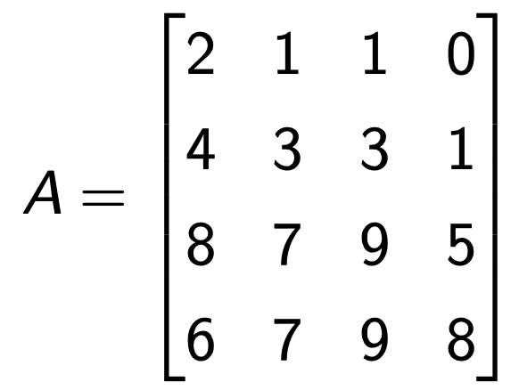
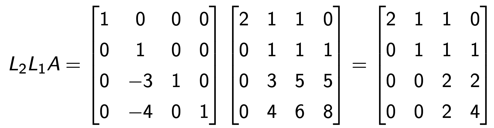
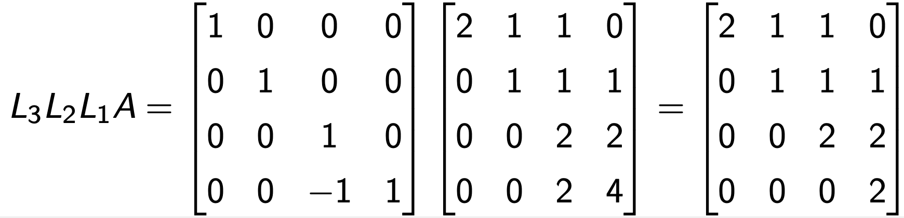
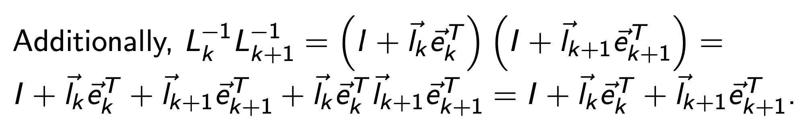
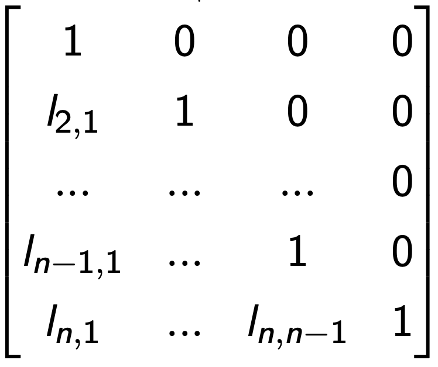
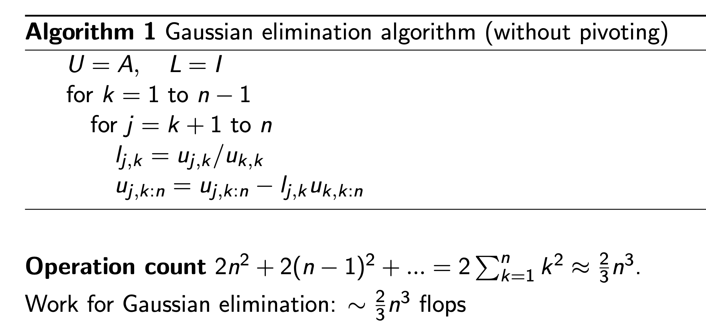
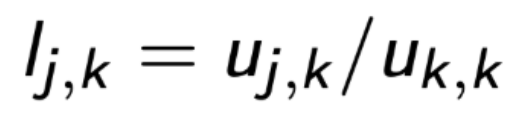
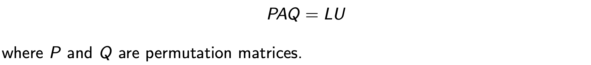
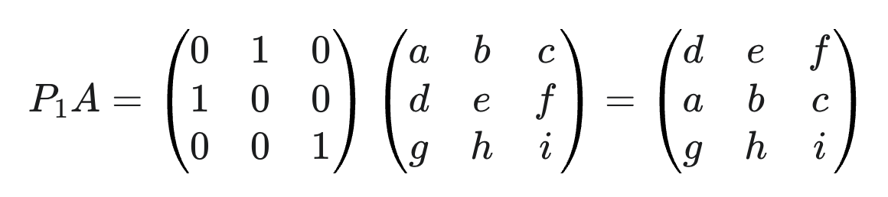
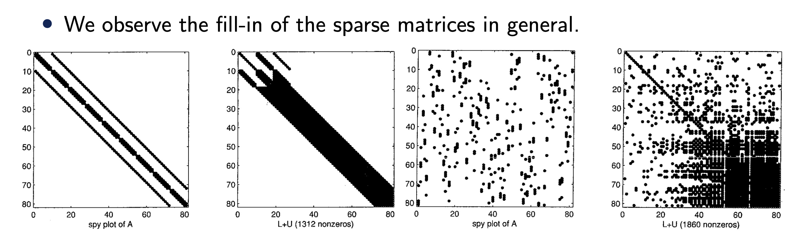

Ch7 State of Equation - last of direct method.
지금 우리는 Computational Linear Algebra content 절반에 와있다.
The problem we are trying to solve

A : m x n Matrix, x = n x 1 vector, b = m x 1 vector
우리는 위 문제를 컴퓨터로 풀기 위한 두 방법중
a. Direct methods -> for small dense matrix
b. iterative methods. -> for large spares matrix
only (a. direct method)를 살펴보았다.
Direct method안에서
QR factorization
을 먼저 다루었고 (part1,2 and 3)
https://jeffdissel.tistory.com/220
2. QR Factorization - part1 (Gram Schmedit)
자 지난시간에는 아주 빠르게 Linear Algebra를 한번 쭉 살펴보았고, 이제 진짜 computer을 이용해서 Matrix Eq을 어떻게 효과적으로구할 수 있을지에 대해서 살펴보자. 그 전에 projector Matrix를 정의하고
jeffdissel.tistory.com
A가 QR분해가 가능하지 아닌지를 판별하기 위해 (condition Number)를 정의하였고, 이를 위해 EVD가 필요하였다.
Eigen Value Decomposition(EVD)
뿐만아니라, A가 m x n (m > n) nonsingular Matrix인 경우에는 EVD가 사용불가능하므로, SVD를 이용하여
spectral number(tool to get condition Number)를 구하여, 해의 존재가능성을 살펴보았다.
Singular Value Decomposition(SVD)
여기서 주의할 점은, A의 state(상태)가 어떠냐에 따라서,
우리는 Ax = b를 푸는 방식이 달라졌다.
1. A is a square matrix (n x n)
1a) Full rank, rank(A) = n 인 경우 ( non-singular Matrix)
유일한 해가 존재.
1b) rank(A) < n 인 경우, (singular Matrix)

2. A is a non square matrix (m x n) and m > n
2a) Full rank, rank(A) = n 인 경우
즉, 연립방정식의 수(m) > 해 변수 수 (n) 이므로,
Ax =b를 만족하는 해가 존재하지 않는다.
따라서, residual 을 가장 최소로하는 x를 찾는
Least Squared Problem
으로 전환
(정확한 해가 존재하지 않으니)

Least squared problem.
2b) Full rank, rank(A) < n 인 경우
위의 경우처럼 연립방정식의 수가 많으므로 대부분 해가 존재하지 않는다.
단, b가 col(A) 중 하나일 경우는 수많은 해가 존재.
3. A is a non square matrix (m x n) and m < n
3a) Full rank, rank(A) = m 인 경우
이번 경우는 해변수갯수(n) > 연립방정식의 수 (m) 이므로
해가 무수히 많이 존재한다.
3b) rank(A) < m 인 경우, 위와 마찬가지로 대부분 해가 존재하지 않지만
b가 column space의 기저벡터와 같다면, 무수히 많은 해가 존재함.
자 여러 A의 시나리오 중에서 direct method를 활용해서 계산할때,
우리는 다음의 절차를 통해서 계산하였다.

지금까지 배운 내용 총 정리한 Direct method diagram
하지만, 이 중에서 우리는 오늘 첫번재 square non singular Matrix A 의 경우,
1. A is a square matrix (n x n)
1a) Full rank, rank(A) = n 인 경우 ( non-singular Matrix)
유일한 해가 존재.
더 효율적인 알고리즘인 LU decomposition에 대해서 알아보자.
QR factorization < LU decomposition
사실 말은 거창해보이지만, 우리가 Linear algebra시간에 배운
LU decomposition is nothing but Gauss eliminiation Method
Linear algebra Guass elimination을 상기려보자.
아래의 A matrix가 있을때.

적절한 L1을 앞에 (rotator)로 곱해주면 첫번째 column vector가 회전하여 e1방향과 align한 벡터로 전환된다.
(Householder algorithm과 동일)

(선형대수학에서는 첫번재 성분빼고 전부 0으로 만드는 열1 - 열2 이런식으로 연산을 했던 기억이 있다)
두번째로 L2를 rotator for column 2 를 해주면, 우리는 두번재 열의 low triangular 성분을 전부 제거가능하다.

이렇게 쭉 진행해주면, 우리는 Right triangular Matrix U만 남게 된다.

따라서, 우리는 A를 다음과 같이 표현가능하다.

이를 일반화하면, 특정 column k를 rotate해주는 rotator Lk를 다음과 같이 정의할 수 있고,
이를 순차적으로 계속해서 곱해주어 A의 left traingular 성분을0 으로 제거하는 방식이다.

여기서 L의 k번째 column vector -> l 이라고 정의를 하면,
우리는 L의
역행렬
을 다음과 같이 l로 정의할 수 있다.

위의 Gauss Elimination 예시를 살펴보면 역행렬을 순차적으로 계속해서 곱해주었다.
따라서, 위에서 l로 표현된 Lk를 순차적으로 곱해주면, 다음과 같이 정리된다.

ekT ek+1 T = 0
따라서, L-1을 1부터 n까지 전부 곱하면, column vector l의 순차적인 합으로 나오게 되고,
최종적으로 다음의 Matrix 하나로 정리된다.

Left triangualr Matrix L.
즉, 우리는 A를 left and right triangluar Matrix, L and U로 분해가 가능하는 것이다.

(기억하자 조건은 A is a square and non singular Matrix)
위 방식이 컴퓨터에서 몇번의 연산을 해야하는 지를 살펴보면, 2/3 n ^3 번 연산을 진행해야한다.
재밌는 사실은 QR factorization - householder Algorihm -> 4/3 n^3보다 절반의 연산이라는 것!!!

하지만, 여기서 Gaussian elimination을 잘생각해보면,
우리가
하나의 열에서 다른 열을 빼는 연산
을 통해서,
left non diagonal component를 0으로 만들어주는 작업을 계속 진행하였다.

위 loop를 잘보면, 빼는 연산을 하기 이전에
대각 성분을 1로 만들고, 모든 다른 요소들을 대각성분으로 나누는 작업을 진행하였다.

여기서 나누는 숫자를 Pivot이라 부르고 위 경우 uk,k 대각성분이 pivot인 상황.
문제는 만약에 나누는 숫자가 0 or 굉장히 작은 숫자라면,
-> inf error.
이를 해결하기 위해서, 우리는
열과 행을 바꾸어 주는 작업을 진행
한다.
예를들어서, 2라는 숫자가 지금은 대각 성분이지만,
row1 < - > row2
를 진행하면 숫자 4가 대각성분으로 전환된다.
이런 식으로, 열과 행을 바꾸는 방법은 바로
permutation Matirx를 이용하는 것!.

간단하게 row vector 1 and 2를 전화하는 방법은 다음의 permutation Matrix를 곱해주는것.
(column vector전환은 뒤에 곱해주면 된다)

여기서 row vector들만 전환하는 즉 앞에만 곱하는 경우를
-> Partial pivoting
row, column vector들을 전부 전환하는 (앞 뒤로 곱하는 경우를)
-> complete pivoting
이라고 부른다.
최종적으로 정리를 해보면,
A : m x n Matrix, x = n x 1 vector, b = m x 1 vector
Ax = b문제를 풀기 위해, 직접적으로 A -> A-1을 구해 x = A -1 b를 구하면 좋지만,
연산량이 너무 많아져, A를 분해해서 위 문제를 푸는 Direct method를 지금까지 다루었다.
(상황에 따라 분해하는 방법이 다름)
[분해하는 방법들]
QR factorization - HouseHolder Algorithm
Lu decomposition (today)
Eigen Value Decomposition(EVD)
Singular Value Decomposition(SVD)
이제는 Direct method의 본질적인 문제를 살펴보고, 다음 주제인 iterative Method로 넘어가자.
FVM에서 Diffusion Equation을 풀기위해 우리는 각 셀의 equation을 하나의 Matrix에 저장한다.
핵심은 0인 요소가 너무 많다는 것 -> Sparse Matrix
이런 경우는 우리는 0은 어차피 연산을 해봤자 0이기 떄문에 연산을 안하는게 이득이다.
하지만, GaussElimination은 구분을 하지 못하고, 전부 zero -> non zero로 오히려 만들어버린다.

따라서, 연산량 측면에서
Large sparse Matrix(which is frquently defined in the engineering problems)
는 Iterative Method로 하는게 더 이득이다.
이게 iterative method의 motive -> next blog chapter topic.